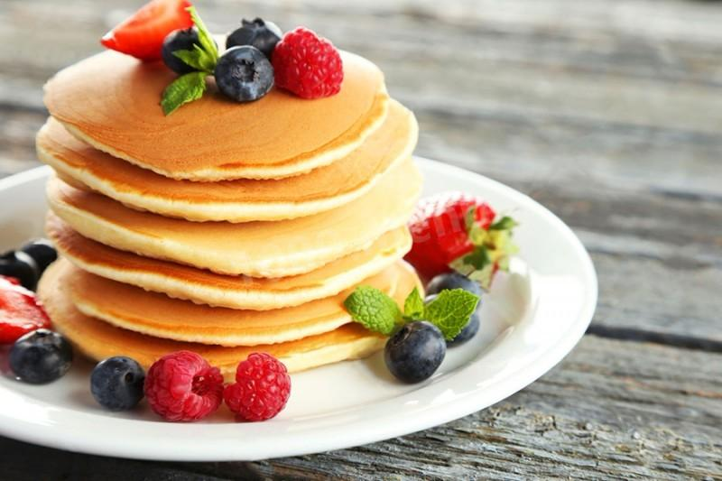

Найсмачніший рецепт тут!
Детальний рецепт:
| Борошно | 300 г. |
| Дріжді | 10 г. |
| Молоко | 350 г. |
| Олія | 4 ст/л |
| Цукор | 4 ст/л |
| Сіль | щіпка |
| Яйця | 2 шт. |
Приготування:
- Два жовтка розтерти з цукром, дріжджі розвести з молоком.
- У просіяне борошно додати жовтки та молоко,ложкою або вінчиком замісити тісто до рідкої однорідної консистенції, додати олію, перемісити і залищити на 15 хв.
- Тим часом збити два білки до стійкої піни. Білки вмісити в масу.
- Смажити на пательні без олії, на середньому вогні, біля 3 хвилин до румяної скоринкита з другого боку.
- Подача:скласти панкейки один на другий, зверху покласти кусочок вершкового масла, полити кленовим сиропом або шоколадом, прикрасити ягодами за смаком.
Смачного!
Сподобався рецепт? Підписуйся на мій інстаграм: Instagram